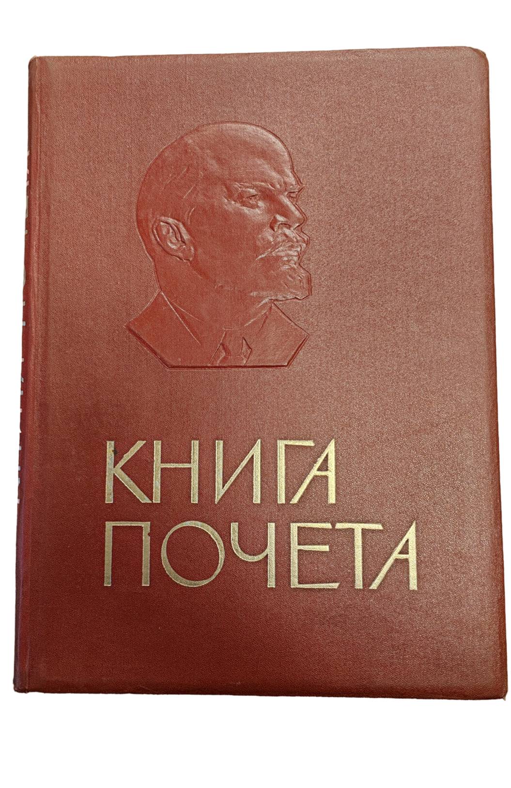
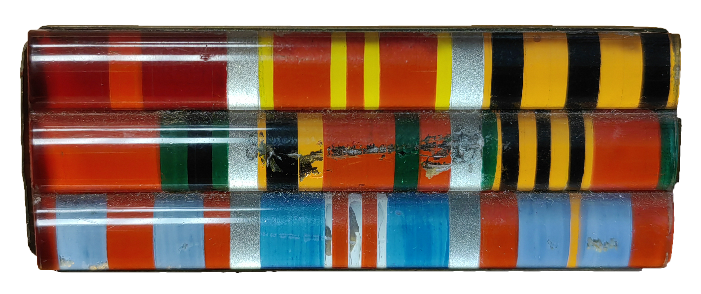
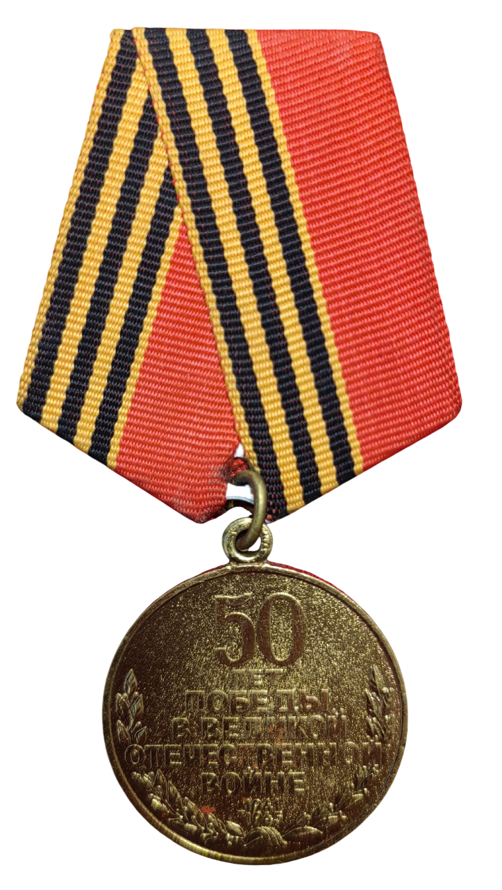
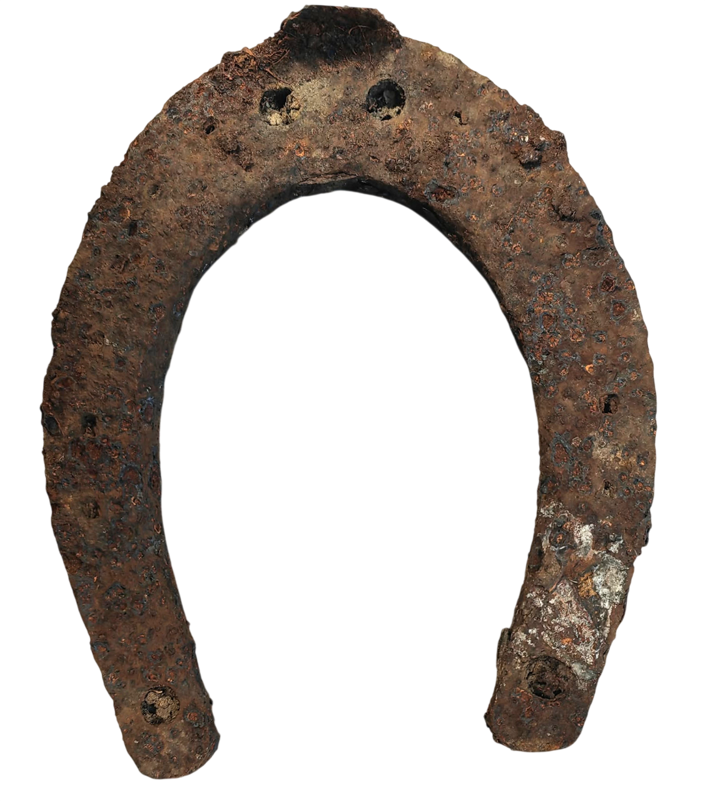

Штальхельм (нем. Stahlhelm, стальной шлем) — пехотная каска, которая под этим названием ассоциируется прежде всего с вооружёнными силами Германии с 1916 по 1945 год.
Штальхельм стал одним из наиболее узнаваемых атрибутов солдат Вермахта.
СШ-40 (Лысьвенская каска) — стальной шлем образца 1940 года, средство индивидуальной защиты военнослужащих, широко использовался в
Вооружённых Силах СССР во время Великой Отечественной войны и в послевоенные годы.
Плакаты Великой Отечественной войны — это мощное средство советской изобразительной агитации и пропаганды (1941–1945), призванное поднимать боевой дух, формировать ненависть к врагу и мобилизовать народ на борьбу. Они сочетают лаконичные изображения, меткие тексты и выполняют роль оперативного идеологического оружия.

Книга Почета СССР с Лениным — это высокостатусный советский документ, оформленный в виде подарочного альбома или папки с изображением В.И. Ленина (часто — барельеф или портрет).
Наградное удостоверение (или удостоверение к медали/ордену) времен Великой Отечественной войны — это официальный документ, подтверждающий награждение военнослужащего. К наиболее распространенным относятся удостоверения к медали «За победу над Германией» (выдавались почти всем участникам) и ордену Отечественной войны (I и II ст.).

Орденская колодка, колодка (в текстах описаний ордена или медали)[1], колодочка — конструктивная часть награды (медали или ордена), которая представляет собой прямоугольную, пятиугольную или иную металлическую пластину.

Юбилейная меда́ль «50 лет Победы в Вели́кой Оте́чественной войне 1941—1945 гг.» — государственная награда России, Казахстана и Белоруссии, учреждённая Законом Российской Федерации в ознаменование 50-летней годовщины Победы в Великой Отечественной войне 1941—1945 годов.

В первые годы войны Красная Армия активно пользовалась кавалерийскими соединениями. Эта подковка лошади,
предположительно предписанная к 2-ой кав.дивизии.
×
Почтовые реквизиты
МАОУ ШКОЛА №79
450065, Республика Башкортостан, г. Уфа, ул. Борисоглебская, д. 16